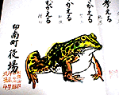
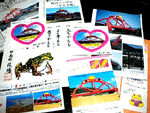

大王様に会うには、上の絵をクリック。ずずっと奥に写真館があるぞ。 |
|
【かえる古新聞】
|
|
【カエル速報】 1.カエルグッズ 2.カエルリンク 3.国家健全化計画 4.謎の髭男 5.とっくりくん 6.街頭で見た蛙 7.カエルグッズ店 8.奉納カエル絵馬 |
| 大王様へのメール |
奉賛会推薦菓子
かえる饅頭 |
|
|
かえる精神を主体にした印南町に学べ
|
 |
|
 |
前号で紹介した印南町は、『職場かえる五ヶ条』=覚えよう=を制定していた。
- 立ちかえる=反省
- よく考える=熟考
- 磨きかえる=努力
- 切りかえる=転換
- 温かくむかえる=親切
印南町役場から心温まるメール
【げこげこ大王７世】大王が印南町役場に電話取材したことに対して、紙メールが届いた。ありがたいことなので、その全文を掲載する。|
印南のカエルについての資料をお送りいたします。印南町の観光等のパンフレットも同封しておりますのでご参考になれば幸甚でございます。と思います。ますますのご活躍とご健勝を遠く和歌山県印南町より祈念いたします。 よーし、ますます活躍して印南町と運命をともにするぞ！ |
かえる橋メモリアルシールをプレゼントだ！！
【印南町役場】印南町役場が、２１印南かえる橋を売り込む、特製シールを二枚届けてくれたので、この喜びを全国のかえるファンと分かち合うために、抽選で一名様に、このシールをプレゼントするぞ。とくとくページにも登録した(笑)。ありがとー、やまもとさん。希望者はいますぐにメールだ。応募が多数になったら、景品を増量するぞー。 大王様へのメールアドレスは、ここだwakuro-3@hf.rim.or.jp| 写真の説明＝役場職員の精神的支柱となっている『職場かえる五ヶ条』。町の公印付きだ。役場から送っていただいた、かえるに関する資料群。大切にするぞ。 |